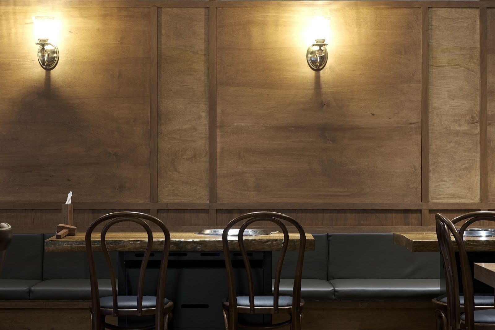

Jeonju · Food
Ondam: Korean barbecue in Jeonju
By Korea Plainly · Published · Updated

Photo: 온담 전주본점(Ondam Korean BBQ) via Google Maps
At a glance: Ondam is a Korean barbecue restaurant in Jeonju, worth considering for a hearty meal between visits to the city’s historic sights.
Visiting Ondam
- Region
- Jeonju
- Address
- Jeonbuk State, Jeonju, Wansan-gu, Jeonjucheondong-ro, 210 1층 KR
- Google rating
- 4.9/5 from 2,885 reviews (October 2026)
Opening hours, prices and closures change. Check the map before you go.
What Ondam is
Ondam is a Korean barbecue restaurant at 210 Jeonjucheondong-ro, in Wansan-gu, Jeonju. Barbecue is a sociable way to eat in Korea: meals are often shared around the table, with diners choosing food together and enjoying it over an unhurried conversation. Ondam’s Google rating is 4.9 from 2,885 reviews, making it a notably popular choice for a meal in the city.
For first-time visitors, Korean barbecue can feel different from ordering a main dish for yourself. The table may be arranged for shared food, and the meal can involve cooking meat at the table. The exact setup and menu can vary, so take a look at the options when you arrive and ask the staff if you are unsure how to proceed. You do not need to know the rules in advance: watching what other diners do and asking a simple question are both perfectly normal.
What to order and how to enjoy it
Check the menu for the cuts and portions available, then choose a combination that suits your group. If you are not sure where to start, you can ask, “추천 메뉴가 뭐예요?” (chucheon menuga mwoyeyo?), meaning “What do you recommend?” If you have a dietary restriction, explain it before ordering; do not assume that a barbecue meal is suitable for every diet, since marinades and shared cooking surfaces may matter.
At many Korean barbecue restaurants, side dishes arrive alongside the main order. These are generally shared, and you can take a little at a time rather than filling your plate immediately. If meat is cooked at the table, let it cook through and follow the pace of the meal; when in doubt, ask before turning or moving anything on the grill. Use the serving utensils provided for shared dishes, and keep your personal chopsticks for your own plate.
A barbecue meal is best enjoyed without rushing. Order thoughtfully at first, then add more if everyone is still hungry. This makes it easier to discover what your group likes and avoids ordering too much before you have seen the portion sizes. If you are dining with others, agree on the main order together; sharing is part of the pleasure, but it also means checking that everyone is comfortable with the choices.
Make it part of a Jeonju day
Jeonju is known for its traditional architecture and food culture, so Ondam can fit naturally into a day spent exploring the city. Pair a meal with time around Jeonju Hanok Village, where you can wander among traditional-style buildings and stop for local snacks or tea. Jeonjucheon, the stream that gives the restaurant’s road its name, and the central market area are also useful points of interest to consider when planning a route through central Jeonju.
Rather than trying to squeeze the restaurant between too many stops, leave room for a proper sit-down meal. A barbecue lunch can be a welcome break after walking; dinner works well if you want to finish a day of sightseeing around the table. Choose the order that best suits your plans and appetite, and check the location on a map before setting out so you can fit it into your route.
How to plan your visit
Allow enough time to settle in, choose your food, and enjoy the meal at a relaxed pace. The time needed will depend on your group size and how much you order, so avoid scheduling a tight appointment immediately afterward. If you are visiting with friends or family, barbecue is especially suited to eating together; solo diners may find it helpful to check the restaurant’s available serving options before choosing what to order.
For the easiest experience, arrive with the address saved in your map app and have your group’s preferences ready: how much you want to eat, whether anyone avoids particular ingredients, and whether you would like help with the grill. An evening meal can be a satisfying end to a day in Jeonju, while lunch leaves the rest of the day open for more exploring.
Good to know
Ondam is at 210 Jeonjucheondong-ro 1F, Wansan-gu, Jeonju, Jeonbuk State. If you do not read Korean, having the address ready to show on your phone can make finding the entrance easier. Restaurant menus, hours, and prices can change, so check current details on Naver Map before you go.
At a Korean barbecue table, sharing food and eating at a conversational pace are common. If you are uncertain about a dish, how to use the grill, or what is included with your order, a polite question is the simplest solution. A few Korean words can help: “감사합니다” (gamsahamnida) means “thank you.”
FAQ
What kind of restaurant is Ondam?
Ondam is a Korean barbecue restaurant in Wansan-gu, Jeonju.
What should I order at Ondam?
Choose from the cuts and portions on the menu, or ask the staff for a recommendation. The available dishes can guide your choice.
What can I visit nearby?
Jeonju Hanok Village is a good sight to pair with a meal in central Jeonju. You can also plan time around Jeonjucheon or the central market area.